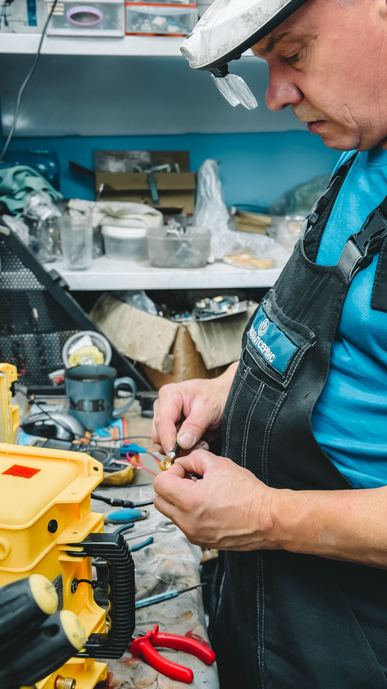

Step 1: Study the Verbs (Paso 1: Estudia los verbos)
Instructions: Look at the picture and imagine yourself doing the action (or do it with your hand). Listen, then repeat the three forms out loud.
Instrucciones: Mira la imagen e imagina que tú haces la acción (o hazla con la mano). Escucha y repite en voz alta las tres formas.
Block 1: Irregular Verbs (Bloque 1)
to bring
traer
Infinitivebring
Simple Pastbrought
Past Participlebrought
to catch
atrapar
Infinitivecatch
Simple Pastcaught
Past Participlecaught
to dream
soñar
Infinitivedream
Simple Pastdreamt
Past Participledreamt
to hurt
doler/lastimar
Infinitivehurt
Simple Pasthurt
Past Participlehurt
to put
poner/colocar
Infinitiveput
Simple Pastput
Past Participleput
to think
pensar
Infinitivethink
Simple Pastthought
Past Participlethought
to tell
decir/contar/platicar
Infinitivetell
Simple Pasttold
Past Participletold
to say
decir
Infinitivesay
Simple Pastsaid
Past Participlesaid
Block 2: Irregular Verbs (Bloque 2)
to begin
comenzar
Infinitivebegin
Simple Pastbegan
Past Participlebegun
to become
volverse/convertirse
Infinitivebecome
Simple Pastbecame
Past Participlebecome
to choose
elegir
Infinitivechoose
Simple Pastchose
Past Participlechosen
to cut
cortar
Infinitivecut
Simple Pastcut
Past Participlecut
to feel
sentir
Infinitivefeel
Simple Pastfelt
Past Participlefelt
to fly
volar
Infinitivefly
Simple Pastflew
Past Participleflown
to forget
olvidar
Infinitiveforget
Simple Pastforgot
Past Participleforgotten
to hear
oír
Infinitivehear
Simple Pastheard
Past Participleheard
Block 3: Irregular Verbs (Bloque 3)
to hit
golpear
Infinitivehit
Simple Pasthit
Past Participlehit
to hold
mantener/sostener
Infinitivehold
Simple Pastheld
Past Participleheld
to keep
mantener/guardar
Infinitivekeep
Simple Pastkept
Past Participlekept
to meet
reunirse/encontrarse con alguien
Infinitivemeet
Simple Pastmet
Past Participlemet
to leave
dejar/salir
Infinitiveleave
Simple Pastleft
Past Participleleft
to know
saber/conocer (información)
Infinitiveknow
Simple Pastknew
Past Participleknown
to lend
prestar
Infinitivelend
Simple Pastlent
Past Participlelent
to pay
pagar
Infinitivepay
Simple Pastpaid
Past Participlepaid
Block 4: Regular Verbs (Bloque 4: verbos regulares, terminan en -ed o -d)

to fix
reparar
Infinitivefix
Simple Pastfixed
Past Participlefixed
to want
querer
Infinitivewant
Simple Pastwanted
Past Participlewanted
to like
gustar
Infinitivelike
Simple Pastliked
Past Participleliked
to hate
odiar/detestar
Infinitivehate
Simple Pasthated
Past Participlehated
to love
amar/encantar
Infinitivelove
Simple Pastloved
Past Participleloved
to use
usar
Infinitiveuse
Simple Pastused
Past Participleused
to need
necesitar
Infinitiveneed
Simple Pastneeded
Past Participleneeded
to call
llamar
Infinitivecall
Simple Pastcalled
Past Participlecalled
Step 2: Remember the Verbs (Paso 2: Recuerda los verbos)
How it works: Each block has 8 verbs. Choose a block. You will see a picture: write the three forms of that verb (infinitive, simple past, past participle) and press Check. The boxes you got right turn green ✓ and lock. The boxes that need work turn red ✗: fix only those. Each box gives you 3 tries; after the third, you see the answer. If you get all three forms right without seeing an answer, the verb comes back later with fewer hints. A verb is mastered after 3 correct rounds (the counter “Correct rounds” goes up with each one). When you master all 8 verbs, the block is completed. From Block 2 on, you first review the verbs of the previous block.
Cómo funciona: Cada bloque tiene 8 verbos. Elige un bloque. Verás una imagen: escribe las tres formas de ese verbo (infinitivo, pasado simple, participio) y presiona Check. Las casillas correctas se ponen verdes ✓ y se bloquean. Las que necesitan trabajo se ponen rojas ✗: corrige solo esas. Cada casilla te da 3 intentos; después del tercero, ves la respuesta. Si aciertas las tres formas sin ver ninguna respuesta, el verbo regresa más tarde con menos pistas. Un verbo queda dominado con 3 rondas correctas (el contador “Rondas correctas” sube con cada una). Cuando dominas los 8 verbos, el bloque queda completado. Desde el Bloque 2, primero repasas los verbos del bloque anterior.
Step 3: Tell Your Teacher (Paso 3: Díselo a tu maestro)
Say the three forms of the verbs your teacher chooses. (Di las tres formas de los verbos que tu maestro elija.)
Ask Marisol
Teacher Marisol
Confirmación del maestro
Maestro: escribe tu clave para confirmar que el alumno completó su clase guiada.
✓ Tu maestro confirmó tu clase guiada
¡Excelente trabajo! Sigue avanzando
Reserva ahora tu cita para tu siguiente clase y continúa con tus actividades. Entra a tu plataforma con tu usuario y contraseña.